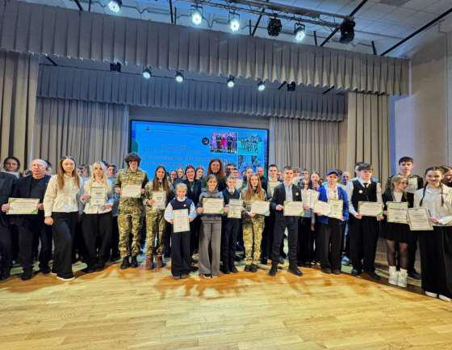
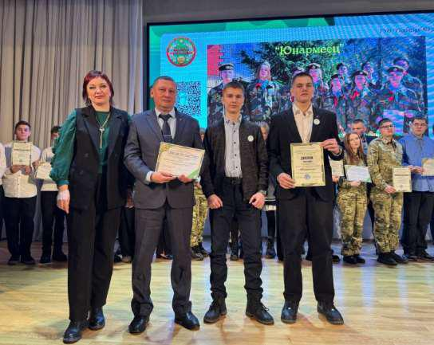
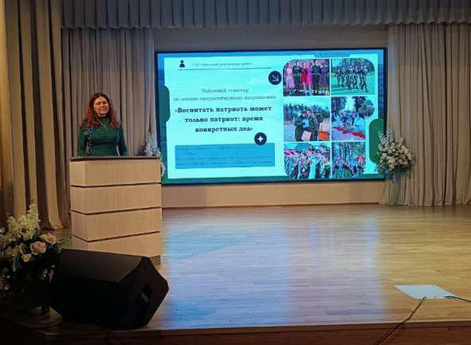
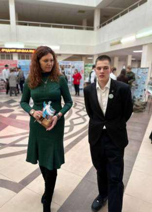
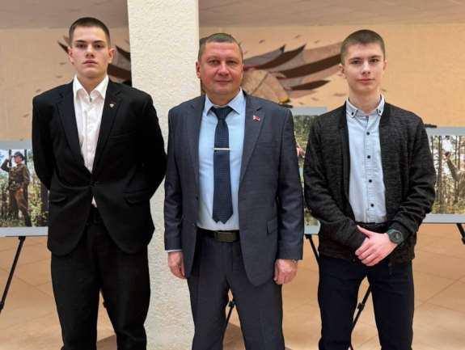

ЯРМАРКА ВОЕННО-ПАТРИОТИЧЕСКИХ КЛУБОВ
Ярмарка военно-патриотических клубов Борисовского района стала настоящим праздником памяти, мужества и преемственности поколений.

22 января на базе средней школы № 25 г. Борисова состоялся районный фестиваль «Не словом, а делом», собравший самые активные военно-патриотические клубы района. Мероприятие стало площадкой для обмена лучшими практиками патриотического воспитания и демонстрации творческого подхода к сохранению исторической памяти.

Особое внимание привлёк наш клуб «Юнармеец», который не только принял активное участие в фестивале, но и был удостоен диплома участника районного этапа областного смотра-конкурса.

Юнармейцы представили зрителям уникальный фото-проект «Сквозь года звенит Победа!». Ребята в костюмах времён Великой Отечественной войны, с исторической атрибутикой и техникой воссоздавали трогательные сцены фронтовой жизни.

Завершился фестиваль посещением центра допризывной подготовки и патриотического музея «Ад бацькі да бацькаўшчыны», где командиры и юнармейцы разных клубов смогли глубже познакомиться с героическим прошлым своей малой родины.

Фестиваль «Не словом, а делом» ещё раз доказал: патриотическое воспитание в Борисовском районе – это живая, динамичная работа, где традиции встречаются с современными формами, а молодёжь с гордостью берёт эстафету памяти из рук старшего поколения.